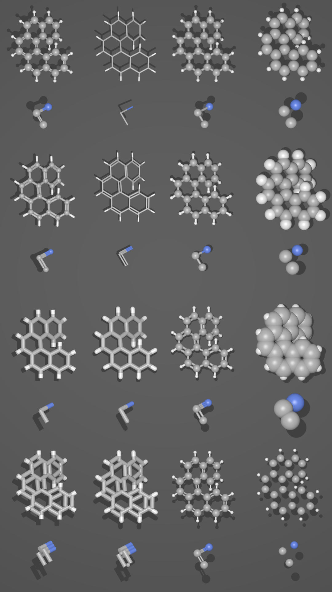
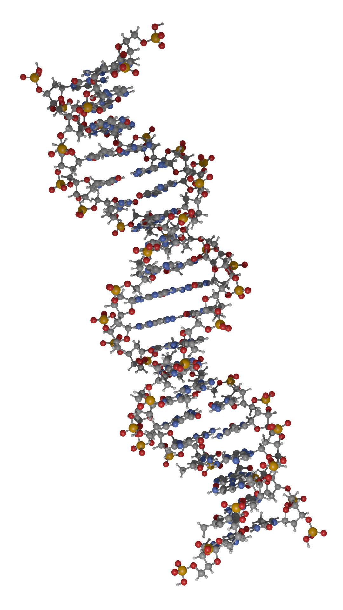
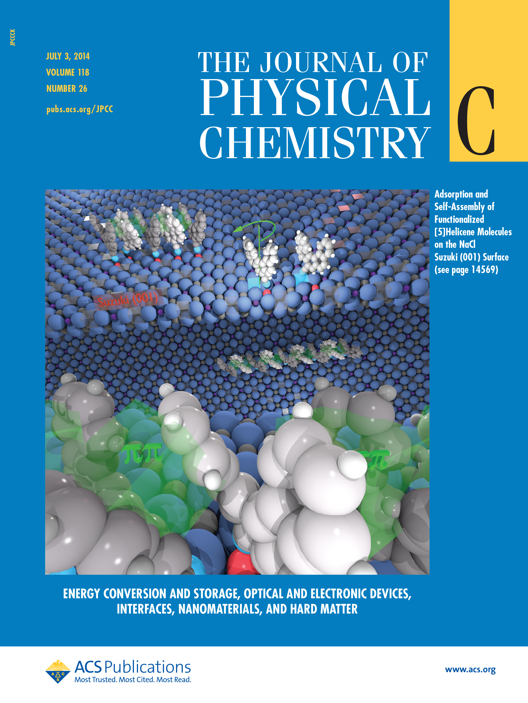
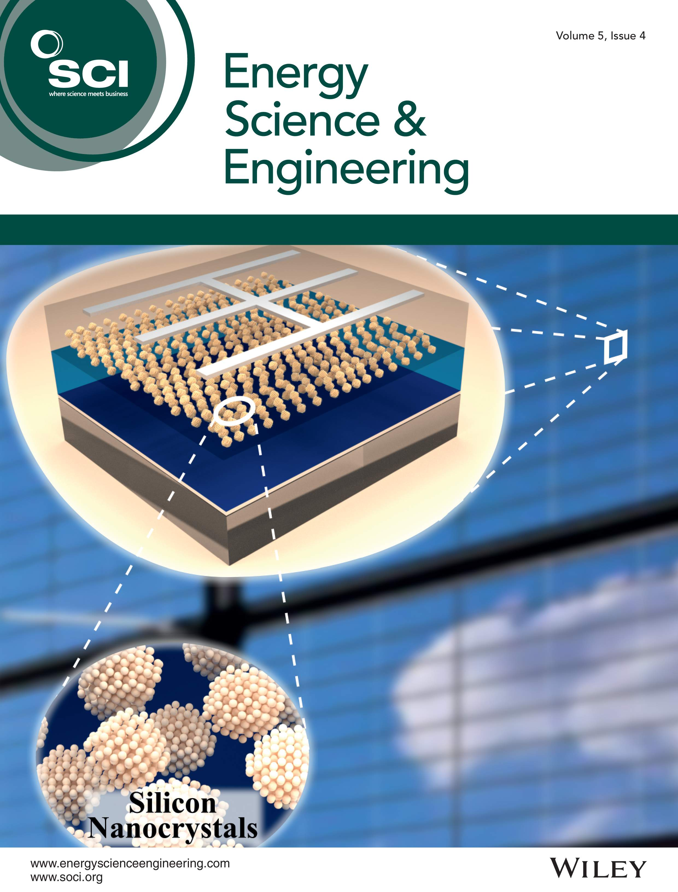

Atomic Blender (PDB/XYZ)插件¶
The Atomic Blender (PDB/XYZ) add-on imports atomic structures
(molecules, crystals, clusters, particles, surfaces, etc.), which are described in
PDB (.pdb) and XYZ files (.xyz) (Import PDB/XYZ). The add-on reads the coordinates of
all atoms in the PDB/XYZ file and represents the atoms as balls in the Blender world.
Also the sticks, which are described in PDB files only, can be shown if the sticks are listed in the PDB file.
For the import, many options can be chosen, which allow representing the atoms and sticks in different ways.
With help of several tools in the Atomic Blender Utilities panel, the atomic structures can be modified
after the import. Note that the coordinates of selected atomic structures in the Blender 3D world
can also be exported into PDB/XYZ files.
Atomic Blender (PDB/XYZ) is interesting for scientists, who want to visualize their atomic structures described in PDB or XYZ files with Blender. Thanks to Blender, fancy graphics of molecules, crystal structures, surfaces, nanoparticles, clusters and complex atomic arrangements can be obtained. Such graphics meet the standards of top-level journals, which have a high impact factor. See Examples at the end of this page.
See also
Info about PDB and XYZ
对XYZ文件格式的描述。 Wikipedia 和 Open Babel 。
Some notes about PDB and XYZ files can also be found on one of the developer's site and remarks.
许多分子可以从 RCSB网站 下载（进入 '下载` ）。
A list of software that deals with PDB in different ways can be found on the RCSB site. There also is Vesta, ASE and all the quantum chemical calculators used in research, which can create or even calculate atomic structures and store them in PDB/XYZ files.
See also
Forum
Please, use the Blender Artists forum for comments and questions.
There also is the possibility to ask questions on Stack Exchange. However, note that some of the developers (like Blendphys) don't have enough credits, which are needed to give answers on Stack Exchange.
Hint
Defects in an Atomic Structure
If you want to show defects like vacancies in an atomic structure, use an 'X' for the element name in the PDB or XYZ file. A defect is shown in the form of a cube.
导入PDB/XYZ¶
{kind=link}
带有PDB导入选项的面板。¶
镜头 & 灯光¶
一个照相机和/或一个光源被放置在三维世界中。两者的放置方式都是为了在光源提供足够光线的情况下，相机可以很好地看到整个原子结构。
物体到原点（PDB）¶
原子结构被放置到三维世界的原点（0.0，0.0，0.0）。
物体到原点（XYZ）¶
无论是在 第一个 还是在 所有的帧 中，原子结构都被放到三维世界的原点（0.0, 0.0, 0.0）。
球/原子¶
- 类型
Choose either NURBS, Mesh or Metaballs for the atoms. For option Mesh the Azimuth and Zenith values can be chosen. Metaballs can lead to some fancy effects: for instance, if enough large, their shapes melt together showing some kind of surface effect.

带有选项的XYZ导入面板。¶
- 缩放因子
原子半径以及原子之间的距离可以通过一个简单的因素进行缩放。
- 类型
The type of atom radius (atomic, van der Waals or as specified in the custom data file [predefined]) can be chosen.
棍 / 纽带 （只在PDB）¶
- 使用棍
Use sticks or not.
- 类型
一般来说，选项 Sector 和 Radius 分别决定棍子的精度和尺寸。选项 Smooth 表示对原子棒进行平滑运算。选项 颜色 意味着棒子被分为两部分，显示它所连接的两个原子的颜色。
- 实例化顶点
The sticks of one element are put into one instancing vertices structure and the sticks appear as cylinders. The instancing vertices structure makes the displaying and loading of many sticks relatively fast (Separate Atoms for more info). Options Unit is the length of a unit (a small cylinder): several of such units are put together forming actually the stick (cylinder). The longer the unit length is the less is the number of such units and thus the faster is the displaying. However, if the unit length is too long the stick becomes eventually longer than the bond length, which the stick will actually represent. This then creates some overlapping effects. Option Bonds displays apart from single also double, triple, etc. bonds whereas option Distance is the corresponding bond distance measured in stick diameter.
- 蒙皮
面板和细分修改器被用来构建棍子。这将提供一个漂亮的棍子网络，可以用来显示，例如，只显示结构中的化学键（事先删除原子！）。选项 SubDivV 和 SubDivR 是细分操作的参数。如果激活选项 Smooth ，则最初的方形棍子轮廓将变为更加圆形的轮廓。注意，如果选择了这个选项，就只有一个代表所有棍子的对象。
- 法线
使用的是普通圆柱体。对于每个结合体，使用一个单独的圆柱体。如果选项 一个对象 被激活，大约 无 棍子被连接成一个网格对象。这使得显示棍子的速度非常快。然而，单个的棍子不存在了。
框架（仅XYZ）¶
- 加载所有帧
只加载所有帧的第一帧。
- 跳过帧
跳过并仅加载每个n-th帧。这对于大数据来说非常有用，因为仅显示每个第4帧可能就足够了。
- 帧/关键帧
显示每个键的特定帧数。关键帧中的许多帧会导致更流畅的演示。
Important
The number of atoms in a frame has to be the same for all frames!
原子Blender实用工具面板。¶
Atomic Blender Utilities 面板让您在操纵导入结构的原子时更轻松。
{kind=link}
原子Blender实用工具 面板。¶
自定义数据文件¶
A separate custom data file containing all types of radii and colors of the atoms can be loaded. Such an option is useful when it is desired to use predefined values for radii and colors. An example can be downloaded from here: Custom data file.
The custom data file is an ASCII file, which can be duplicated and modified by the user.
The radius and/or color of the atoms can be permanently changed as follows:
Open the ASCII file with a standard text editor, search the name of the atom
and change the radius (Radius used). Do the same with the RGB values for the color.
The value RGBA(1.0, 1.0, 1.0, 1.0) corresponds to white and RGBA(0.0, 0.0, 0.0, 1.0) is black.
Note that the last value of a color tuple is the alpha value of the color.
Inside Blender, the data file needs to be loaded first. The colors and radii are changed after executing Apply. Note that only selected atoms are changed.
测量距离¶
This is to measure the distance of two objects in Object Mode but also in Edit Mode. The unit is Ångström.
改变原子大小¶
- 半径的类型
- 类型
使用此选择器可以选择半径的类型。其中一个使用 预定义 、 原子 或 范德华 半径。预定义半径的默认值是 原子 半径。
- 电荷
For option Ionic radii, the charge state can be chosen and the radii of selected objects are instantaneously changed. Select one type of atom (e.g. only all hydrogen ones) and then apply the charge state. Changes only apply if a charge state of an atom is available.
- pm半径
All radii of a specific type of atom can be manipulated. Type in the name of the atom (e.g. 'Hydrogen') and choose the radius in picometer.
- 半径的比例
This modifies the radii of all atoms with one scaling factor. Type in the scaling factor and increase or decrease the size of the radii by using the Bigger or Smaller button, respectively.
更改棍大小¶
The diameter of the sticks are changed. The buttons Bigger and Smaller allow increasing or decreasing the diameter, respectively. The scale factor determines, how strong the change of diameter will be. By using the Outliner, one can apply these operators on only a selection of sticks (e.g. only the sticks of the hydrogen atoms). Note that changes only apply if the sticks are individual objects, e.g. single cylinders or if the sticks are described in instancing vertices structures.
变化原子形状¶
It is possible to change the shape (sphere, cube, icosphere, etc.) and material of the atoms. First, select your atoms in the 3D Viewport or the Outliner.
- 形状
在第一个选择器中选择形状。
- 材质
在第二个选择器中选择一种材质。材质只是示例，可以在属性的材质选项卡中进行进一步的细化。
- 特殊
在这里，您可以选择具有特殊形状、材质等的对象。这些物体代表原子结构中的缺陷是非常好的。选择此特殊对象时，您不能再从上面单独选择形状和材质。在属性的对象和材质选项卡中，可以进行进一步的更改。
- 替换
After all, push the Replace button. The shape and/or material of all selected atoms are then changed. This option works for objects and instancing vertices object structures.
- 默认
如果要具有所选原子的默认值（ NURBS球体和特定元素颜色和大小） ，请按 默认 按钮。
独立元素¶
When structures are imported via the PDB or XYZ importer, the atoms are put into a so-called instancing vertices structure, somewhat into 'groups' of elements (e.g. all hydrogen atoms form one instancing vertices structure). In the Edit Mode of Blender, single atoms can be deleted or displaced by modifying the position of the vertices. However, they are always a part of the structure and are not independent objects. Sometimes one would like to mark a single atom or replace an atom by something different: for instance, imagine you have a NaCl cube where you would like to replace an atom by an atomic defect in form of a ball with a different color.
To separate single atoms, one needs to select the atom (vertices) first in the Edit Mode. In the Atomic Blender Utilities panel, the Object selector and the Separate button appear at the bottom. If the selector remains on Unchanged the type of object (NURBS, mesh, meta) and its properties will not be changed upon separation. If desired also an other type of object can be chosen, which then replaces the standard type of object.
After having chosen the type of object, use button Separate Atoms to separate the selected atoms:
the atoms are then single, new objects, which can be manipulated in any way.
They appear in the Outliner and carry the suffix _sep.
Hint
Converting All Atoms of an Instancing Vertices Structure to Real Independent Objects
Do the following: Select the whole atomic structure with the mouse then use 实例独立化. With this you produce real independent objects! In the Outliner delete the remaining instancing vertices structures, named like "Carbon", "Hydrogen", etc.
示例¶

同一分子的不同呈现方式。¶ |

DNA分子的一部分。¶ |

Functionalized [5]helicene molecules on the NaCl(001) surface (Clemens Barth et al. -- Link to publication).¶ |

Solar cell structure to underline the properties of silicon nanocrystals deposited by pulsed spray system (Mickael Lozac'h et al. -- Link to publication).¶ |
The following movie was created by Sébastien Coget (responsible researcher: Frank Palmino) at the Femto-ST institute in Besançon (France). The movie demonstrates that with Blender, professional movies can be done for research. It was rendered with Cycles.